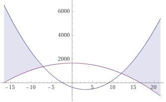

Aufgabe 49 Bestimmen Sie die Lösungsmenge der Ungleichung für x ∈ ℝ: 18x² - 119x - 356 ≥ 1672 - 6x² 18x² - 119x - 356 ≥ 1672 - 6x² |+6x² - 1672 24x² - 119x - 2028 ≥ 0 |:24 119 x² - -----x - 84,5 ≥ 0 24 119 119 119 x² - -----x + (-----)² - (-----)² - 84,5 ≥ 0 24 48 48 119 14161 14161 194688 x² - -----x + -------- - ------- - -------- ≥ 0 24 2304 2304 2304 119 208849 208849 (x - -----)² - -------- ≥ 0 |+ -------- 48 2304 2304 119 208849 (x - -----)² ≥ ---------- |ⱱ 48 2304 119 457 |x - -----| ≥ ----- 48 48 Fallunterscheidung: 1. Fall 119 119 119 119 |x - -----| = x - ----- für x - ----- ≥ 0 --> x ≥ ----- 48 48 48 48 119 457 119 x - ----- ≥ ----- |+ ----- 48 48 48 576 x ≥ ----- = 12 48 119 L1 = x ≥ ----- ∩ x ≥ 12 = x ≥ 12 48 2. Fall 119 119 119 119 |x - -----| = -(x - -----) für x - ----- < 0 --> x < ----- 48 48 48 48 119 457 119 -(x - -----) ≥ ----- |+ ----- 48 48 48 119 457 457 -x + ----- ≥ ------ |+x - ----- 48 48 48 338 169 x ≤ - ----- = - ----- 48 24 119 169 169 L2 = x < ----- ∩ x ≤ - ----- = x ≤ - ----- 48 24 24 169 L = L1 ∪ L2 = x ≥ 12 ∪ x ≤ - ----- = 24 169 L = x ≥ 12 ∪ x ≤ - ----- 24 169 In Worten: Für x ≥ 12 oder x ≤ - ----- 24 ist 18x² - 119x - 356 ≥ 1672 - 6x². 